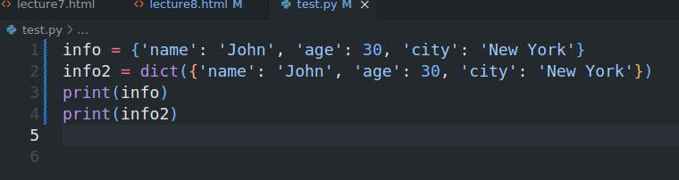
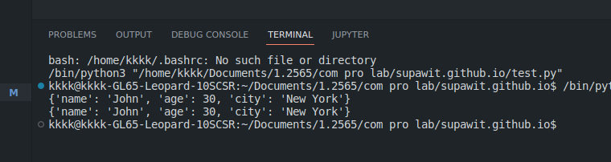
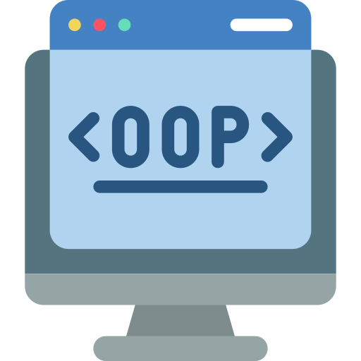

Lecture 8
Dictionnaires and set
- DICTIONARY
object that is used to store data values in key:value pairs.
key must be unique and of immutable data type such as strings, numbers, or tuples.
values can be any data type and are not necessarily unique.
Dictionary is mutable, meaning that we can change, add or remove items after it has been created.
Dictionary is an unordered collection of items. While other compound data types have only value as an element, a dictionary has a key: value pair.

Example




len() function use count number of item in dictionary
len() function use count number of item in dictionary
To create empty dictionary, we can use dict() or {} function.
like dict = dict() dict = {}Use for loop to iterate over a dictionary.
Example


SOME DICTIONARY METHOD
| Method | Description |
|---|---|
| clear() | Removes all the elements from the dictionary |
| copy() | Returns a copy of the dictionary |
| get() | Returns the value of the specified key |
| items() | Returns a list containing a tuple for each key value pair |
| keys() | Returns a list containing the dictionary's keys |
| pop() | Removes the element with the specified key |
| popitem() | Removes the last inserted key-value pair |
| setdefault() | Returns the value of the specified key. If the key does not exist: insert the key, with the specified value |
| update() | Updates the dictionary with the specified key-value pairs |
| values() | Returns a list of all the values in the dictionary |
Example


ADD ITEMS TO THE DICTIONARY
We can add new items to the dictionary using the following two ways. Using key-value assignment: Using a simple assignment statement where value can be assigned directly to the new key.
Usingupdate()Method: In this method, the item passed inside the update() method will be inserted into the dictionary. The item can be another dictionary or any iterable like a tuple of key-value pairs.


SET DEFAULT VALUE TO A KEY
Using the setdefault() method default value can be assigned to a key in the dictionary. In case the key doesn’t exist already, then the key will be inserted into the dictionary, and the value becomes the default value, and None will be inserted if a value is not mentioned.
In case the key exists, then it will return the value of a key.

As seen in the above example the value of the setdefault() method has no effect on the ‘country’ as the key already exists.-

Try this example


SET
Set is an unordered collection of data items that are unique.Python Set doesn’t maintain the order of elements, i.e., It is an unordered data set. So you cannot access elements by their index or perform insert operation using an index number.

CREATING A SET
We can create a set by using the set() function with an iterable object or a sequence by placing the sequence inside curly braces, separated by ‘comma’.
Example


You will get error if you try to access items using index like set[0] because set is unordered collection of items.
see the example


Union of set
Union of two sets will return all the items present in both sets (all items will be present only once). This can be done with either the | operator or the union() method. The following image shows the union operation of two sets A and B.

Intersection of set
The intersection of two sets will return only the common elements in both sets. The intersection can be done using the & operator and intersection() method.

Difference of set
The difference operation will return the items that are present only in the first set i.e the set on which the method is called. This can be done with the help of the - operator or the difference() method.

Symmetric Difference of set
The Symmetric difference operation returns the elements that are unique in both sets. This is the opposite of the intersection. This is performed using the ^ operator or by using the symmetric_difference() method.

Method of set
len() |
Return the length (the number of items) in the set. |
add() |
Add an element to a set. If the element is already present, it doesn’t add any element. |
update() |
Add all elements of a list, tuple, set, or dictionary to another set. It doesn’t add any duplicate element. |
remove(),discard() |
Remove an item from a set. If the item is not present in the set, it raises an error.Discard method doesn’t raise an error if the item is not present in the set. |
clear() |
Remove all items from the set. |
union() or | |
Union of A and B is a set of all elements from both sets. If there are duplicate elements, they appear only once in the result. |
intersection or & |
Intersection of A and B is a set of elements that are common in both the sets. If there are duplicate elements, they appear only once in the result. |
difference or - |
Difference of A and B (A-B) is a set of elements that are only in A but not in B. If there are duplicate elements, they appear only once in the result. |
synmmetric_difference() or ^ |
Symmetric Difference of A and B is a set of elements in both A and B except those that are common in both. |
issubset() or <= |
Test whether every element in the set A is in the set B. |
issuperset() or >= |
Test whether every element in the set B is in the set A. |
Example


-
SERAILIZING OBJECT
Serializing an object means to convert its state to a byte stream so that the byte stream can be reverted back into a copy of the object. Deserializing an object means to convert the byte stream back into a copy of the object.
Pickle module implements binary protocols for serializing and de-serializing a Python object structure. “Pickling” is the process whereby a Python object hierarchy is converted into a byte stream, and “unpickling” is the inverse operation, whereby a byte stream (from a binary file or bytes-like object) is converted back into an object hierarchy.

-
Step to pickle an object
1. Import pickle module
2. Open a file, where you want to store the data
3. Put data into the file
4. Close the file
-
Step to unpickle an object
1. Import pickle module
2. Open the file for reading
3. Read the data from the file
4. Close the file
Example to Pickle


Example to Unpickle


Finish Lecture 8 !
Goodluck :)
If you have any questions, please feel free to contact me.